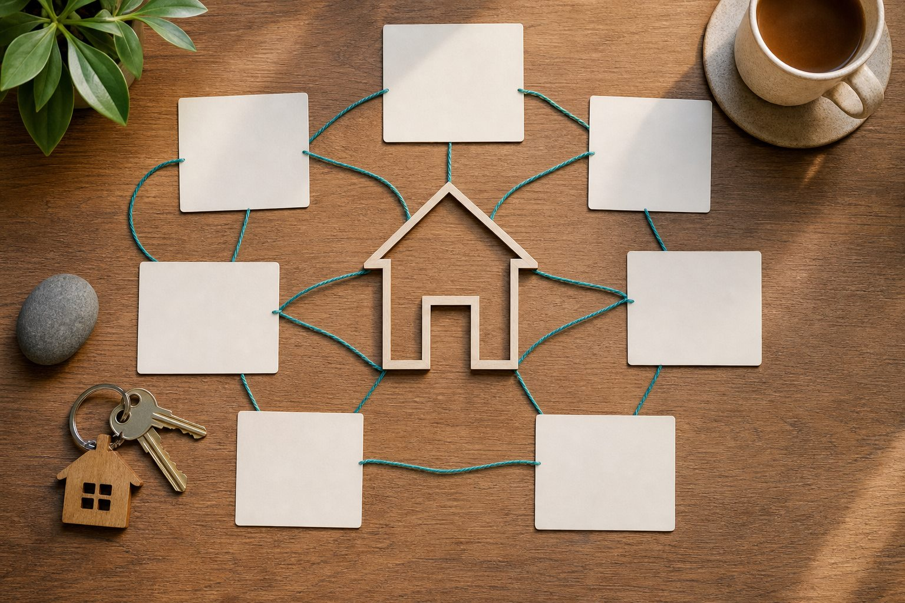
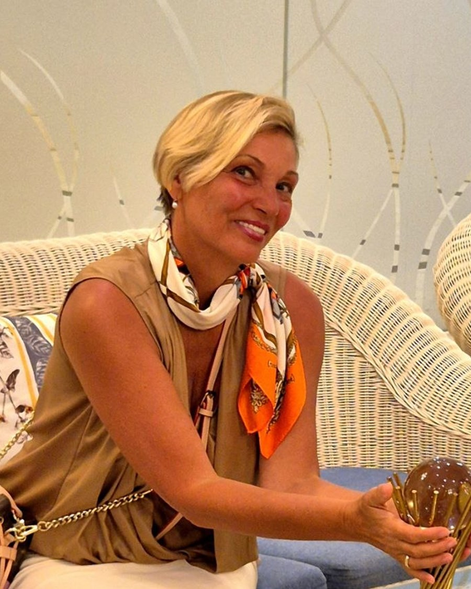
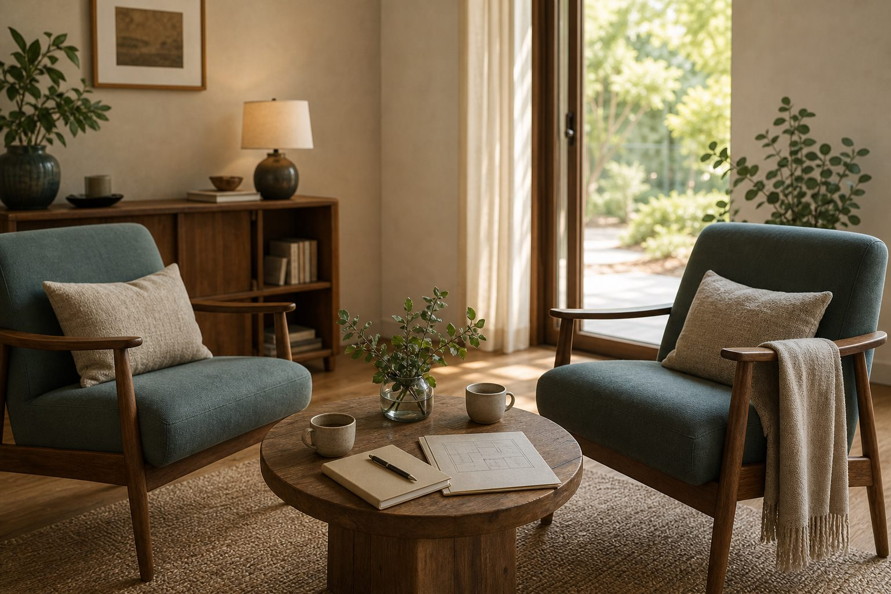
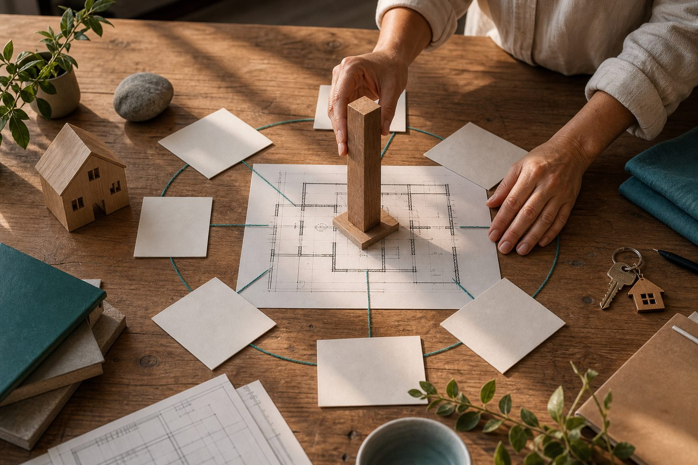
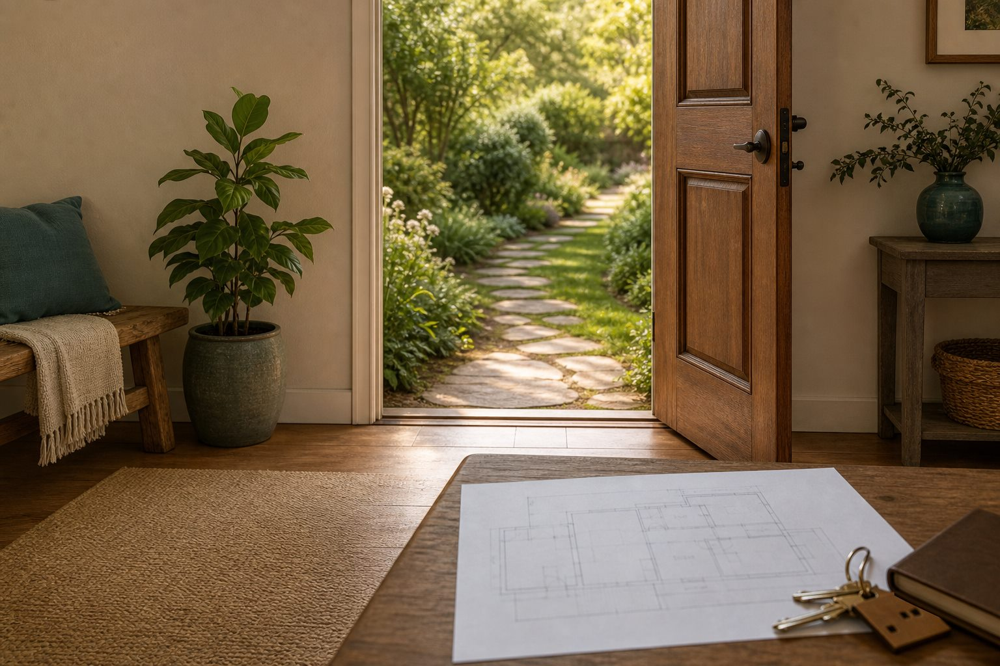

Третья ступень Рейки: раскрыть Мастера-Целителя и собрать жизнь как целое
Мастер жизни
Мастер жизни — это третья ступень Рейки и индивидуальный маршрут, где человек раскрывает целительские способности и проходит этап Подмастерья.
Это путь сборки внутренней структуры вокруг своего стержня, где эго, страхи и старые реакции постепенно уступают место зрелому выбору.
Вход начинается с разговора со Светланой: спокойной проверки момента, готовности и лучшей точки входа.

Узнавание
Когда одна сфера налаживается, а другая снова забирает все силы
Вы вроде разобрались в отношениях, а тело всё равно сжимается от одного сообщения.
В реализации появился импульс, а деньги, режим и быт начинают просить другой опоры.
Практики есть. Силы иногда возвращаются. И всё сильнее хочется опоры, которая держит вас на встрече, во вторник утром, в семье, в делах и в усталости.
Болезненная точка кажется очевидной, а потом выясняется, что начинать нужно совсем с другого места.
Третья ступень
Рейки II — это инструмент. Мастер жизни раскрывает Мастера-Целителя.
На второй ступени вы учитесь применять символы, дистанционную практику и работу с событиями. На третьей ступени начинается раскрытие мастерского уровня.
Человек получает мастерский символ, учится соединяться со своим высшим мастерским аспектом и работать со своими целями уже из другой точки опоры.
Инструмент
Символы, дистанционная работа, события, состояние и ответственность в конкретных ситуациях.
Структура Мастера
Сборка целостности, раскрытие целительских способностей и движение из позиции Творца.

Система жизни
Третий уровень показывает, где распадается ваша система жизни
На этом уровне важны техника и способность видеть всю карту: тело, отношения, деньги, проявленность, смысл, энергию, дом, выбор и внутренний возраст.
Иногда больная точка звучит громче всего, а мастерский путь помогает увидеть настоящий узел, где действительно нужно перестроить опору.
Поэтому маршрут идёт через последовательную сборку. Сначала выбирается один важный узел, в нём появляется реальный результат, и только потом эта новая опора расширяется на остальные сферы жизни.
Сигналы
Где тело всё ещё живёт в старом напряжении.
Опора
Как энергия и действия начинают согласовываться.
Зрелость
Где вы выходите из старой роли ребёнка или подростка во взрослую позицию.
Путь
Где появляются уникальные качества, с которыми можно звучать в мир.
Как устроен маршрут
Как собирается третий уровень
Путь начинается с Подмастерья: человек учится взаимодействовать с Мастером, практическими задачами и своей новой скоростью.
Подготовка
Разговор, уточнение запроса, вход в маршрут и понимание, с какой точки начинается сборка.
Подмастерье
Обязательный этап участия в практических задачах и взаимодействия с Мастером. Здесь человек учится держать больше энергии и ответственности.
Готовность
Мастер определяет, готов ли ученик к инициации Мастера. Часть Подмастерьев продолжает подготовку до нужной зрелости.
Инициация Мастера
Инициация закрепляет тот уровень, который человек уже собрал внутренней работой и практикой.
Мастерский символ
После инициации идёт практика с мастерским символом и соединение с высшим мастерским аспектом.
Результаты в жизни
Человек подтверждает уровень конкретными решениями, проявленностью и взрослением своей жизни.

Собеседование
Вход происходит через разговор со Светланой
На этом уровне важны желание «пойти дальше» и готовность выдерживать скорость, энергию и ответственность мастерского пути.
Светлана может подтвердить вход или предложить подготовку, чтобы человек вошёл в Подмастерье из правильной точки. Это часть заботы о пути.

Инструменты
Инструменты Дома Эволюции работают как части одной системы
На пути могут использоваться Рейки, архетипы, активации и метод OFF-SWITCH. Эти инструменты собираются в единую систему под маршрут человека.
Каждый инструмент включается там, где он помогает человеку стать устойчивее, видимее и точнее в своей линии проявления.
Рейки
Работа с энергией, инициацией, мастерским уровнем и целительскими способностями.
Архетипы
Помогают увидеть внутреннюю стратегию человека, его качества и точный маршрут. Менторинг здесь относится к архетипической технологии сопровождения.
Активации
Помогают поднять человека на следующий уровень состояния и закрепить новый внутренний масштаб в теле, выборе и проявлении.
Метод OFF-SWITCH
Инструмент переключения состояния и выхода из автоматической реакции в более взрослую позицию.
Результат
Статус подтверждается жизнью
Мастер жизни собирает свои части во взрослую зрелую позицию и начинает действовать из внутреннего стержня.
На этом уровне может появиться больше энергии и согласованности, потому что человек перестаёт распыляться против своего пути и начинает действовать в своей линии.

Вытаскивание своих частей из детской и подростковой позиции во взрослую опору.
Нахождение уникальных качеств, через которые человек может звучать в мир.
Когда действия, энергия и пространство начинают складываться в одну линию.
Что может меняться
Путь затрагивает всю конфигурацию жизни
Это может проявляться в профессии, деньгах, отношениях, видимости, энергии, внутренней взрослости и способности держать свой масштаб.
Новая линия проявления
Человек может увидеть, что прежняя роль уже мала, и начать собирать новое направление.
Из новой опоры
Старые партнёры, неудачи и страхи уступают место решениям из взрослой позиции.
Больше сил на своём пути
Когда действия согласованы с сутью, энергия перестаёт утекать в чужие сценарии.
Живое объяснение
Светлана о Мастере Жизни
Отдельное видео для третьей ступени Рейки: о мастерской опоре, переходе от личной практики к зрелому уровню Мастера Жизни и следующем шаге пути.
Видео «Мастер жизни. Рейки».
Свобода после пути
После Мастера Жизни можно выбрать свой формат
Мастер жизни может раскрыть целительские способности, изменить направление движения, стать ролевой моделью для других и выбрать тот формат проявления, который действительно созрел.
Если же созреет желание передавать Рейки другим людям, обучать их первым ступеням и сопровождать учеников, следующий уровень — Мастер-Учитель Рейки.
Мастер жизниСобранная взрослая опора
Остаться
Жить и проявляться из мастерского уровня.
Преподавать
Идти к уровню Учителя Рейки, если созреет желание передавать практику.
Маршрут Рейки
Путь Рейки
Вопросы
Частые вопросы
Здесь собраны вопросы, которые помогают отличить настоящий мастерский маршрут от желания быстро получить статус.
Да. В Доме Эволюции Мастер жизни — это третья ступень Рейки и раскрытие уровня Мастера-Целителя.
Вторая ступень даёт символы и работу с ситуациями. Третья ступень собирает мастерский уровень, целительские способности, мастерский символ и зрелую структуру жизни.
Индивидуально. Обучение в целом длится от 3 до 9 месяцев. Подмастерье может завершиться инициацией или продолжиться подготовкой, если человеку нужно больше времени для сборки уровня.
Когда Мастер видит, что человек собрал нужный уровень. Инициация закрепляет готовность, подготовку и уже проявленную внутреннюю структуру.
После Мастера Жизни можно остаться в своём мастерском направлении. Преподавание Рейки — отдельный следующий уровень, если он действительно созреет.
Да. Мастер Жизни — это прежде всего личная мастерская опора, целительские способности и зрелая практика. Преподавание начинается только на следующем уровне, если оно действительно созрело.

Разговор о третьей ступени
Достаточно почувствовать, что пора собирать жизнь целиком
Можно начать с разговора о том, где сейчас распадается система и какая точка сборки нужна первой.
Стоимость — €3 000от 3 до 9 месяцеввход через разговороплата разбивается на срок обучения